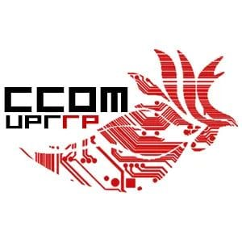

Tutor de Ciencia de Cómputos
Mi primer trabajo dentro de la universidad fue como tutor de cursos básicos de ciencia de cómputos bajo el programa de schollar compass. Esta oportunidad me acercó aun más a contemplar la posibilidad de educar en el futuro. Como tutor pude desarrollar mis habilidades de comunicación y de resolver problemas de manera creativa y buscar la mejor manera para más que solo dar una solución a un problema, poder hacer que cada paso de la solución quede claro sin ningún tipo de confusión.
Más información.Desarrollador Backend en el CDCC
Actualmente trabajo para el Centro de Desarrollo y Consultoria computacional, donde mayormente me desempeño como "backend developer". A diferencia del trabajo como tutor y de "Remezcla", este es uno más aplicado donde producimos aplicaciones web a distintas organizaciones. He trabajado en varios proyectos, uno particularmente llamado, Molenium, el cual se presentará este sábado 8 de marzo en el Seminario Interuniversitario de Investigación en Ciencias Matemáticas (SIDIM 2025). Molenium, es una aplicación basada en web que busca solucionar el problema de difícil acceso a la información de investigación recopilada en los laboratorios del Departamento de Química de la Universidad de Puerto Rico Recinto de Río Piedras. Molenium, sincroniza un repositorio en el que se guardan las medidas realizadas constantemente por los instrumentos, con un servidor que es accesible a través de una página web alrededor de todo el mundo.
Más información.Remezcla: Code Your Music Camp
Durante el verano de 2024 estuve trabajando en el campamento "Remezcla: Code youy Music". Esta es una iniciativa de la Universidad de Puerto Rico Recinto de Río Piedras en colaboración con Georgia Tech, que busca promover la educación en Ciencia de computos en adolescentes de escuela intermedia y superior. Se busca combinar temas básicos de programación y ciencia de cómputos con la creación de pequeñas piezas musicales utilizando la plataforma "Earsketch". Esta oportunidad me cambió la perspectiva de lo que como Científico de computos soy capaz de hacer. Pues estudiando ciencia de cómputos somos capaces de impactar a próximas generaciones con algo tan sencillo, pero tan necesario, como lo es compartir nuestro conocimiento.
Más información.Actividades Extracurriculares
Beca Francis Castro
Como estudiante de ciencia de cómputos he tenido la oportunidad de ser becado de la beca Francis Castro otorgada por el departamento de Ciencia de Cómputos y el programa Schollar Compass. Como becado, además de recibir apoyo monetario, soy parte de distintas conferencias, charlas y seminarios orientadas en temas de ciencia de cómputos, matemáticas e investigación. Adicionalmente, es un compromiso de ser estudiante a tiempo completo sin ningún trabajo fuera de la universidad.
Más información.ICPC
Los pasados meses de octubre y noviembre participé de la "International Collegiate Programming Contest". Junto con otros dos compañeros formamos el equipo llamados "Los Jardineros". Afortunadamente pudimos sobrepasar la primera ronda, lo que nos permitió ser parte de la competencia nacional realizada en la Universidad de Puerto Rico, Recinto de Mayagüez. Desafortunadamente en esta competencia nacional no pudimos obtener el triunfo, culminando asi nuestra participación en la competencia. Esta experiencia es bien particular pues me enseñó lo importante que es el trabajo en equipo y me invitó a reflexionar sobre diversas áreas que debo trabajar para poder contribuir de manera más eficiente y organizada a un grupo de trabajo.
Más información.